V3 载荷方向对照：历史切向 / 参考外法向
真实接受状态，位移 ×1。材料与Gaussian标量规则相同；实际输入功可能不同。法向为合成力学对照。
实际结论
仅将原453点的历史参考切向改为真实暴露表面参考外法向，确实改变了损伤首发位置、传播范围、时序及实际碎裂响应，但本工况没有改善块状形成：完整2.33ms内所有32个自由分量均为单节点，历史最大/末态最大均为1点；沿用上一轮定义的保存关键帧筛查没有识别出≥14、≥34或≥114节点凝聚候选。没有证据支持本次方向替换足以形成更完整的独立块状碎片。相同标量载荷规则下实际人工加载功从91.8350083nJ降至19.6974524nJ，不能据此评价等输入能量的效率。
全部三维坐标轴均为相对参考材料质心的平移坐标，单位mm；全局原点为 [-0.006002439024390274, 3.4769071094966284e-05, 0.001089750908147383] m。只平移原点，材料位置和位移尺度不变。报告中的首次损伤中点采用原全局坐标。
完整28项中文科研审查
Fig01_reference_load_directions
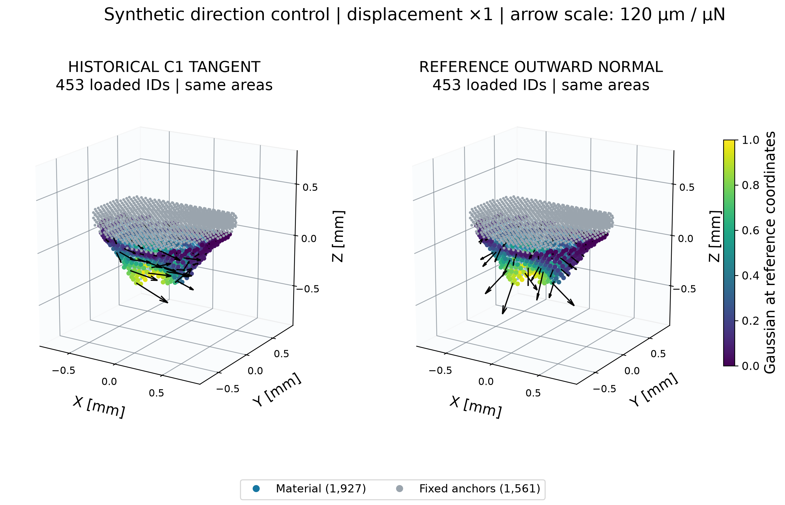
SVG · 1,927 material points and 1,561 fixed anchors; all 453 loaded IDs colored. Forty-eight deterministic farthest-point arrows show forces at the reference geometry and unit pulse amplitude, 120 micrometres per micronewton. Direction is fixed in reference space; the actual Gaussian uses moving coordinates. Geometry is not scaled. Normal orientation and same-input force magnitudes are independently checked.
Fig02a_matched_V3_states
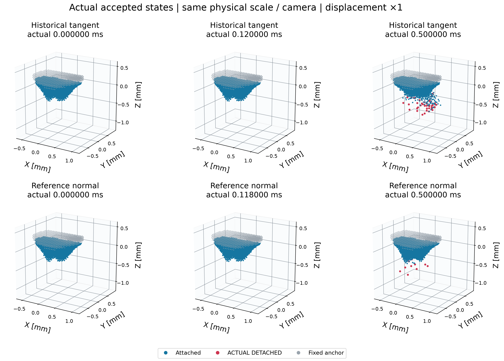
SVG · Requested matching times [ms]: 0.000000, 0.118000, 0.500000. Each panel labels its actual accepted time. Nearest saved state matching is recorded with exact offsets in VISUAL_STATE_MATCHING.json; no interpolated nodes or fracture events. All live bulk bonds are drawn; interface/scaffold lines omitted for readability.
Fig02b_matched_V3_states
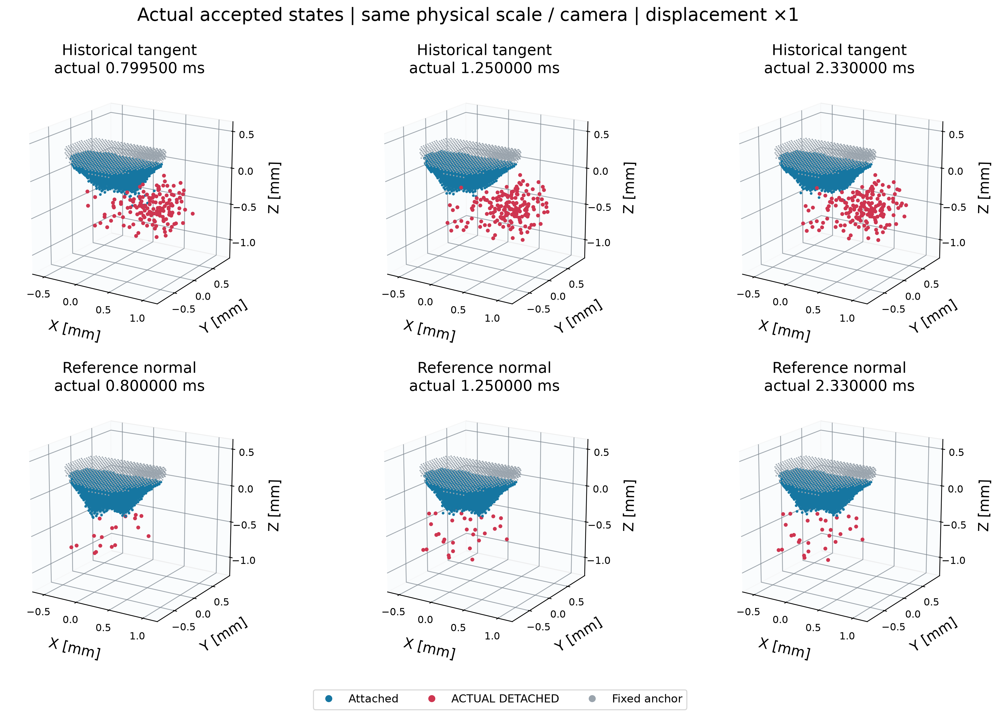
SVG · Requested matching times [ms]: 0.800000, 1.250000, 2.330000. Each panel labels its actual accepted time. Nearest saved state matching is recorded with exact offsets in VISUAL_STATE_MATCHING.json; no interpolated nodes or fracture events. All live bulk bonds are drawn; interface/scaffold lines omitted for readability.
Fig02c_first_failure_events
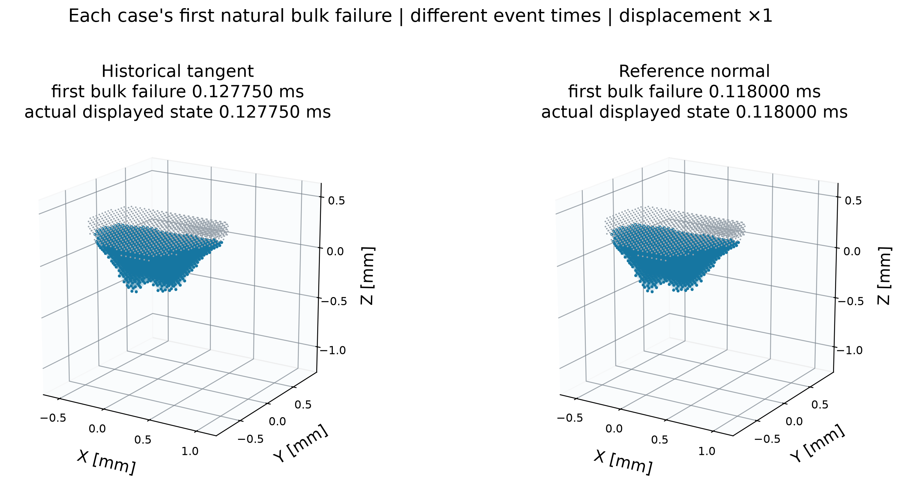
SVG · Complement to the matched-time panels: each case at its own first natural bulk failure. Both event time and actual saved display time are explicit; these two panels are not a simultaneous comparison. Common camera and physical bounds are retained.
Fig03_local_cohesion
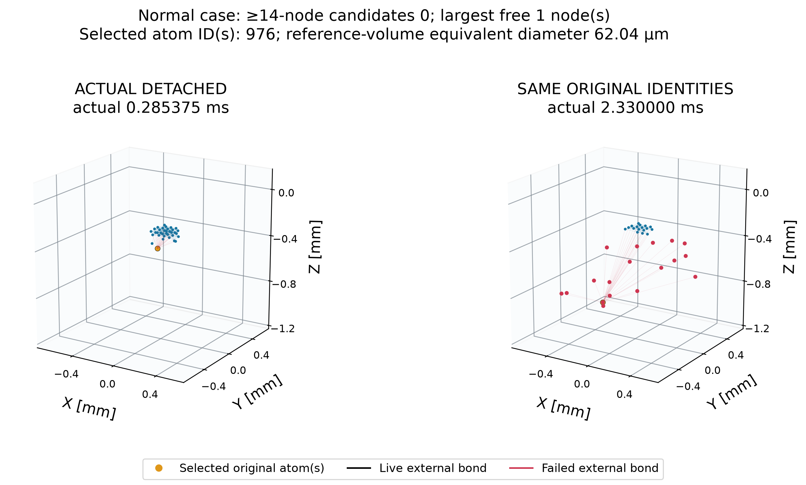
SVG · Orange highlights the selected original identity set, not an artificially merged fragment. Gold lines: surviving internal bonds; black: surviving external bonds; faint red: originally external bonds that actually failed. Exact formation event topology is in JSON; a sampled display time is labeled explicitly if no full nodal state exists at that event. Negative candidate results use the unchanged prior graph criteria. IDs and internal survival are retained in CHUNK_COHESION_AUDIT.json.
Fig03b_damage_organization
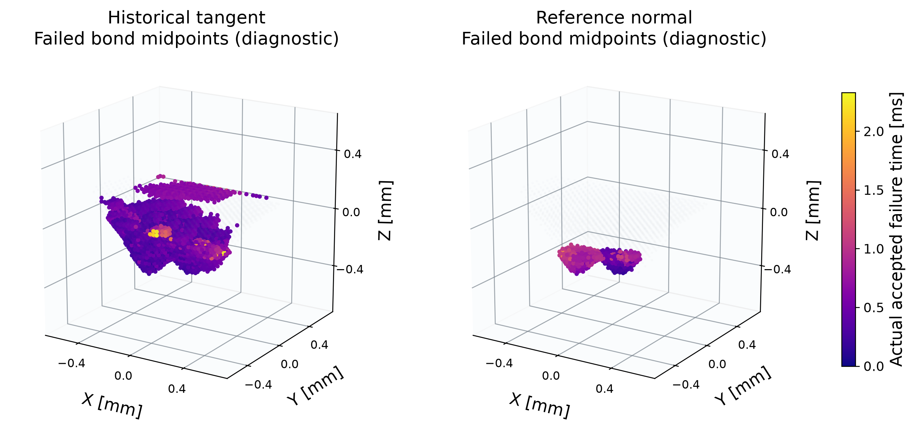
SVG · Original reference bond midpoints colored by actual full-failure time. Common reference coordinates distinguish changes in where damage initiates and spreads. A connected damage cloud is not a reconstructed continuous crack surface; bulk and interface regions are quantified separately in BULK_INTERFACE_FAILURE_AUDIT.json.
Fig04_actual_fragment_sizes
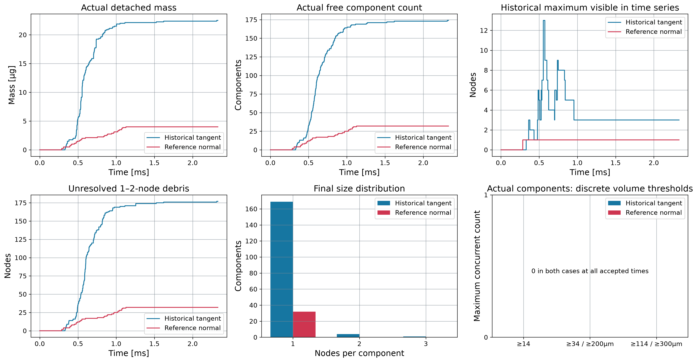
SVG · Historical maxima and final sizes are distinguished. Component membership uses live original bulk/interface paths to fixed anchors, never contact proximity. The 200/300 micrometre labels are equivalent reference-volume thresholds, not converged physical size or clinical safety targets.
Fig05a_forces_work_energy
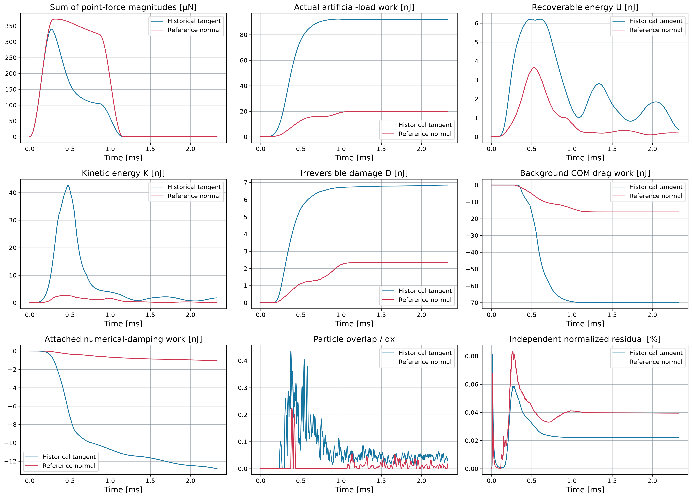
SVG · Same scalar load rule is not equal actual work. Exact force-displacement work and independent residual are preserved; the residual is not damage dissipation. Force magnitude is computed at each case’s own evolving coordinates. Full signed force vector and all channels are in the FP64 history.
Fig05b_contact_and_typed_failures
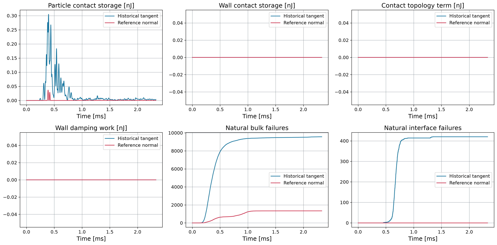
SVG · Complementary channels in W_load+W_drag+W_numeric+W_wall_damping=ΔU+ΔK+D+ΔUc+ΔUw−Jc+R. Wall elastic work is recorded separately and not counted again as external input when wall storage Uw is included.
Fig05c_pulse_and_resultant
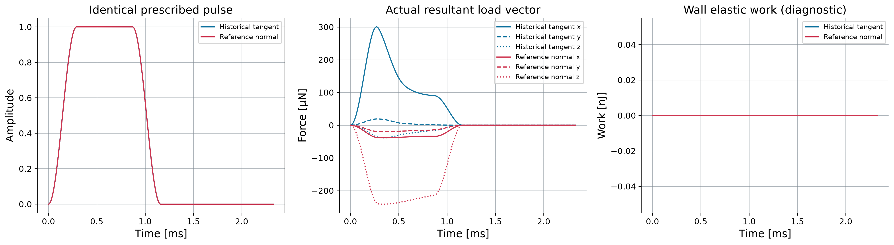
SVG · The original pulse is inherited without override. Resultants differ from the sum of individual force magnitudes because the outward normal varies across the curved surface. Wall elastic work is a diagnostic channel and is not double counted in the primary ledger.
Fig06_evidence_and_cost
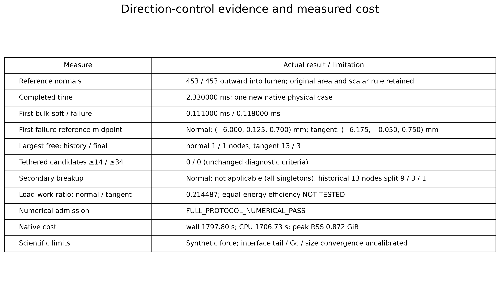
SVG · Summary of actual accepted numerical results; neither normal traction nor the retained artificial C1 loading is a verified microbubble force. A single direction comparison cannot identify equal-input-energy efficiency or calibrate material Gc.